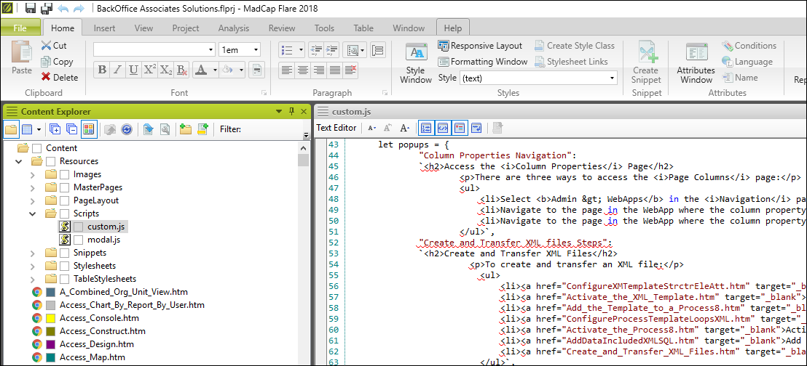

This topic contains:
To create a topic:
In the Content Explorer pane, right-click the Content folder, and then select New > Topic (or Ctrl+T).
Select NewTopic.htm under New from Template.
Enter the File Name using underscores, save the file to the correct path, (component name/Config, Page Desc or Use Cases) and then click Add.
Note: When Flare compiles file names, it embeds the entire file path string in the file name. If the file path string and file name combine into more than 99 characters, it will cause issues when recycling old checkout folders. Name file names and folders using as few characters as possible.
Replace the default content in the topic with the new content.
Right-click anywhere in the topic, and then select Topic Properties from the drop-down.
Set the appropriate master page depending on the component name. Refer to Apply the Master Page.
On the Conditional Text tab, select the condition tag to apply to the topic. Refer to Use Condition Tags.
Click OK.
Open the appropriate TOC (Component name, TopNav). Drag and drop the topic from the Content Explorer pane to the appropriate location in the TOC.
Update the TOC Label to the title. There are two ways to do this. You can double-click the label in the TOC, delete what is there “[%=System.LinkedTitle%]”, and enter the title with spaces and proper capitalization or you can update it in the Properties dialog on the General tab.
Right-click the topic in the TOC and select Properties from the drop-down menu.
On the Conditional Text tab select the appropriate conditions for the topic in the TOC. Refer to Use Condition Tags for more information about how condition tags are used to generate output.
Click OK.
Tip: Refer to the following checklists for a complete list of possible updates.
Update Topic Properties:
In the Properties dialog, on the Topic Properties tab, set the appropriate master page based on the component name/guide name.
On the Conditional Text tab, select the check box next to the component name.
Add component name snippet to upper right of topic: See Add and Insert Snippets for Static Content for the steps for this process.
Add component Concept to the topic: This step ensures the topics is included in search results when a search filters is set.
On the View tab, open the Concept window.
Right-click the concept and select Assign Topic.
Browse for, and then select the topic.
Note: Refer to Add Concepts for more information.
Confirm links have been added: Including “Refer to” links and page name links.
Add topic to the appropriate TOC: You can do this by dragging and dropping it.
Important: Make sure to update the TOC Label to the title, removing the default system variable. If the title in the TOC is blue you need to remove the variable. Refer to Create New Topic, step 9 for more information.
Add component name CT to the topic in TOC: See Use Condition Tags for the steps to complete this process.
Confirm proper CTs have been applied: This includes references to ISA, Syniti Connect, and Master Data Management.Additionly omit any information about the Data Quality application from the solex version o the release notes/What's new topic .
Review formatting: Refer to the Syniti Documentation Standards for more information.
Update Topic Properties:
In the Properties dialog, on the Topic Properties tab, set the appropriate master page (Component name).
On the Conditional Text tab, select the check box next to the component name.
Add component Concept to the topic: This ensures that the topics is included in search results when a search filters is set.
On the View tab, open the Concept window.
Right-click the concept and select Assign Topic.
Browse for, and then select the topic.
Tip: Refer to Add Concepts for more information..
Add component name snippet to upper right of topic: See Add and Insert Snippets for Static Content for the steps for this process.
Confirm links have been added: This includes “Refer to” links and page name links.
Add topic to the Component name TOC: This can be completed by dragging and dropping it.
Important: Make sure to update the TOC Label to the title, removing the default system variable. If the title in the TOC is blue you need to remove the variable. Right-click the title in the TOC and update the Label field. Refer to Create New Topic, step 9 for more information.
Add component name CT to the topic in TOC: Set the conditional tag in the topic and in the TOC. See Use Condition Tags for the steps to complete this process
Confirm proper CTs have been applied: : This includes references to ISA, Syniti Connect, and Master Data Management.Additionly omit any information about the Data Quality application from the solex version o the release notes/What's new topic.
Review formatting:
Ensure the word NOTE: has been added to notes.
Ensure the navigation steps at the top of the topic are numbered.
Ensure the reference to a topic that uses this page is formatted with div.use.
Ensure the table style is fielddescription.css.
Confirm Use this page to section: Make sure a reference to a topic that uses this page is included and is formatted with the div div.use (highlight the “Use this page to” section text, click the Create Group icon in the Paragraph section, select div.use and click Ok). These steps add a blue box around the text.
Add the Map ID: Indicate in the peer review that the link to the page needs to be checked on the test site. Refer to Add Context-sensitive Help Links.
Note: When adding the Map ID, update the Alias File Value field to the appropriate range for the component. Refer to Alias Value Range for the alias file value ranges by component.
Add the page hyperlink to the component’s Page Descriptions page.
When existing Help content needs to be updated, generate a Word document containing the content from Flare or cut and paste content into a Google document. Then, once generated, turn on Track Changes and update the content as needed. Attach the updated Word document to the Jira ticket and send for review as noted in the following sections.
To generate a Word document from Flare:
In the Project Organizer, open the TOCs folder.
Create a new TOC in the TOCs folder and copy the TOC that includes the content you will be updating.
Open the PrintTOC.
Click and hold the tab for the PrintTOC, and then drag it to float next to the Copy of ConsoleTOC”
In the new TOC, locate the topic or book with the content to be edited and drag it to the PrintTOC.
Save the PrintTOC (you can close both TOCs at this point).
Open the Target Folder, and then open the Word target.
On the General Tab, click the browse option next to Output Folder and select where you want Flare to generate the document (you can select your Desktop, for example).
On the Variables tab, update the ComponentName variable as needed.
Click Build.
The Word document is generated. You can open the document from the Builds pod, or click View in the Target editor.
Tip: If you only have one or two topics to update you can just copy and paste the content into a Google document and include the link in the JIRA ticket.
Note: Please delete the new TOC you created before you push your updates up to GitHub to avoid having many extra TOCs hanging around in the project.
Condition tags serve two purposes. A condition tag is applied to almost every topic in the Content Explorer in Flare to identify the specific component to which it belongs.
Condition tags are also used in an output Target to include/exclude entire topics or certain text in a topic from Help output. This allows generations of the two online help systems described in the next section. If a topic must be excluded from one of the Help systems, the condition tag also must be applied to the topic’s TOC link in the TOC.
For SST, two online help systems are output from Flare, Full and Solex.
The condition tags to be include or excluded in these outputs are configured in the Target used to build the output. Refer to Build Help Targets
Refer to Condition Tags Used in the Project File for information about which condition tags are included/excluded for each help system.
For SKT, one help system is built and published.
For Syniti Guides, two sets of manuals are available online.
A condition tag must be applied to almost every topic in the Content Explorer to identify the topic’s component. The condition tag must be applied to the topic’s link in the master TOC as well.
Note: Content that displays in both versions of help does not have a CT. This includes DSP Navigation and How to Use Online Help topics, and other general topics.
To apply a condition tag to an entire topic:
Select the topic in the Content Explorer.
Right-click the topic and select Properties.
In the topic Properties dialog, click the Conditional Text tab.
Click the check box next to the Condition Tag to apply it to the topic.
To apply a condition tag to the topic’s link in the master TOC:
Right-click the topic in Content Explorer and select Locate in TOC.
Select the correct TOC from the options. Then click Open.
Right-click the TOC link and select Properties.
In the topic Properties dialog, click the Conditional Text tab.
Click the check box next to the Condition Tag to apply to the topic.
To exclude certain text in a topic from one of the online Help systems, a condition tag must be applied to the specific content.
To apply the condition tag to content in a topic:
Open the topic that contains the content.
Select the content.
Right-click and select Conditions from the drop-down.
Click the check box next to the Condition Tag to apply it to the content.
Note: Once you have applied the condition tag, the text is highlighted in the topic to reflect that a conditional build tag is applied.
To see how the topic displays in online help when a condition tag is applied:
Click the Preview icon in the topic toolbar.
Note: You can also click the drop-down next to the icon to preview the topic with the condition tags as configured in a specific Target.
Click the Modify Conditional Expression The Modify Conditional Expression Icon icon and then select the condition tags to include or exclude in the preview.
Note: This only affects the preview, not the output. Condition tags to exclude content from output must be set in the Target.
To view a list of the topics and content to which a tag is applied:
Click the View tab, and then select File List from the Explorer group.
Click the Conditions header to sort the list by condition tag name.
The master page applied to topics dictates which menu displays on the topic. Menus are component-specific.
To apply the master page in Flare on the Topic Properties window, go the Topic Properties tab, in the Masterpage list box.
SST master pages are based on component names.
SKT master pages are . ..
Installation Guides master pages are based on the name of the guide.
Use the following steps to format tables in Flare topics when copying and pasting from Word:
Copy the table in Word.
Paste the content into a Flare topic, and then select Paste Table from the Smart Paste drop-down.
Smart Paste Icon

Smart Paste Menu
Right-click the Table block, select Table Properties, and then in the Table Style drop-down, select the fielddescription.
To format the table text, click in a cell in the table and select the appropriate style from the Style drop-down.
Note: To format multiple cells at once, select and click the cells, right-click, then select Cell Content Style.
Tip: You can also copy a table from an existing page description and edit its content. This process helps maintain the <p> tags.
Some fields that have multiple options are referenced throughout the online help, such as Report Type. To maintain content in one location rather than repeating it every time the field is mentioned, add the content to the popups object in the custom.js file and add a link with the”popUpLink” class and appropriate id (the title of the content inserted as the key in the key value pair).
To view the popups that have already been created in the project, open the custom.js file and view the popups object.

Popup object code
Note: Since our popups are located in a Javascript file, use a code editor like Visual Studio Code when adding or updating the content.
To add a popup using Visual Studio Code and Flare:
Refer to the section Create New Topic and complete Steps 1-8.
Note: When creating this topic, enter the content of the popup only. Do not enter snippets, concepts, or CT tags. Affix the word Popup to the topic’s file name and make sure the Searchable checkbox has been disabled for the topic.

The Searchable Checkbox
Right-click the custom.js file in the Content Explorer in Flare.
Select Open with and then Code.exe.
Note: For code.exe to display in the list, associate the file type .js with Visual Studio Code in your Control Panel.
Open with Menu with Code.exe displayed
In Visual Studio Code, find the popups object at the bottom of the custom.js file.
At the bottom of the object, put a comma at the end of the last key value pair and click Enter on your keyboard.
Open a new set of quote marks and type in the title of the popup, close the quote marks, enter a colon, and click Enter on your keyboard.
In Flare, open the new popup topic you created in step 1.
Click the Text Editor tab at the bottom of the topic window.
Copy the content of the popup.
Note: Do not include the xml declarations, head, or body tags.
What to copy from the Popup file in Flare
Back in Visual Studio Code, paste the html code between two backticks after the colon of the popup’s title.

What final popup code should look like in VS
Save your work in Visual Studio Code.
In Flare, open the topic where you want to add the popup link.
Type and/or highlight the text for the popup link.
Apply the .popUpLink class to the text using the Style window or manually in the html.

Adding popup class with Flare GUI
Click the Text Editor tab for the topic.
After the popUpLink class enter the title for the popup as the id.
Note: The format for entering an id for a tag is id=”title” There are no spaces between id, the equals sign, or the quote marks. Be sure to enter the title exactly as it appears in the custom.js document (copy and paste it from the document to be sure).
How an id should appear in code
Save your work in Flare.
The component name for a topic is included as a snippet in the upper right of the topic file.
The component name is also styled as a button and used to navigate to the Overview section of each component.
To add the component name snippet to a topic:
Copy and paste it from another topic, or
Click in the topic where you want the snippet added.
Select the Insert tab, click Snippet.
Select the snippet file you want to add.
Click OK.
Glossary terms are added to the glossary file in the SST Help project as new terms and concepts are added to the Help content. The glossary defines Syniti specific terms that those new to the products might not be familiar with. The terms must be relevant to customers who are using the products in the field. Terms specific to internal development processes do not need to be defined.
Note: Do not define terms that are well defined elsewhere, for example by SAP or other industry standards, unless they have a very specific use or implementation in the products.
In the Content Explorer Pane, double-click the glossary topic in the Content folder.
In the glossary topic, add the new term maintaining proper formatting and the alphabetical order.
Click Save.
When a user clicks the ? icon on any page in the product, the help system opens and displays the field description topic for that page. This is referred to as Context-sensitive Help.
When documenting a new page, enter a Map ID that links the page with the topic name in Flare. The Map ID, coupled with an Alias Value in Flare, links a page in the product with a topic in the help file. In the SST implementation of online help, a Map ID is the GUID for a page.
Each component has a range for an alias file Value. Refer to Alias File Value Range to see a table of values by component.
If documenting a new component, a developer can send the Technical Writer the GUID for each page in the component.
GUIDs for individual pages are available in the Platform.
To get the GUID for any page:
Click the Change Settings icon in the Site Toolbar.

Change Settings menu in DSP
Select Technical Help and click the Technical tab.
Technical tab in DSP
The GUID for the current page displays next to Page ID.
To add Map IDs:
Convert the GUID to uppercase and replace hyphens with underscores.
In the Project Organizer, in the Advanced folder, open the BackOffice Associates Solutions alias file.
Click the Value field to sort the list on value to determine the next value to use based on the component of the topic being mapped. Refer to Alias File Value Range for a list of alias file value ranges by component.
Click Create a new identifier in the Alias Editor.
Enter the GUID for the page in the Identifier field.
Press Enter on your keyboard.
Note: GUIDs must be uppercase and must contain underscores instead of hyphens.
Double-click the Value field to make it editable. Enter the next available value in the appropriate range in the Value field. Press Enter.
Double-click the topic name that opens when the user clicks the ? on the GUID’s page in the Topics pane to assign it to Identifier.
Open the alias file in the Project > Advanced folder (the file is called BackOffice Associates Solutions, the second one listed). Sort it on Value to find the sequence you need. Close the alias file.
Open the header file, BSSCDefault.h.
Go to the end of the file, and then copy and paste the last line to duplicate it on a new row. Edit the values shown. Paste over the GUID with the new GUID and edit the value to the sequence identified in Step 1.
Save and close BSSCDefault.h.
Reopen the alias file and map the topic. At this point, the topic has an orange icon. To map the topic, highlight the line in the “BackOffice Associates Solutions” file and double-click the topic in the Content Explorer. The topic is now mapped.
Important: To test the GUID links to the correct page, merge the PR to the develop_XXX branch, build dev in Jenkins, pull up the Cucumber report, and click the Help icon for the new page in the DSP. Refer to Check Latest Build for detailed steps.
We apply Concepts to related topics to group them to create the search filter in help. We have added concepts for component names along with related subjects such as CTS or Bulk Execution.
Note: You can copy and paste a concept from one topic to another instead of following the steps below. The Concept does not show up in the generated output.
Adding concepts and search filters:
Set Flare up with the TOC, a topic, and the Concepts window open.
Place your cursor in the topic where the concept link will go (it does not show up in output so does not matter where really, except do not add it to the same line as the heading; this throws off the search).
Enter your concept in the Concepts window in the Terms dialog and press Enter on your keyboard. The concept displays in the topic.
Click inside the topic and click Save to save the topic. The concept shows up in the Concepts list (below the terms box.)

Concepts list in Flare
Now that you have your concept in your Concepts list, you can drag and drop topics to the Concept.
Close the topic so that the TOC and Concepts window are side-by-side.
You can drag a folder or a single topic from the TOC to the concept in the Concepts list. You can also right-click on a concept in the list and browse for a topic (this works if you are only adding one or two topics). And you can drag and drop from the File List view as well.
New concept added to Concepts list in Flare
Note: If you drag a lot of topics from the TOC to the Concepts list, Flare has a lag, it won’t respond to mouse clicks, (because it is working in the background to add all of the topics) there will be a little screen flash when it’s done, and then you know the topics have been added. (This only happens when you add A LOT of topics.) Flare really should have a progress bar when that happens!
Tip: You can expand the node in the Concepts list to see what topics are included.

Expanded node in Concepts list
Once you have the concepts added to the topics, you can add the filter for it to the Search Filters.
Note: This has already been set up in the project. It is included as background information.
To add concepts to Search Filters:
Open the Search Filter file in the Advanced folder.
Click Plus to add the filter, and double-click in the Filter name field to give it a name.
Note: This is the name that shows up in the drop-down in the Output.
Press Enter on your keyboard.
Double-click in the Concepts field and associate the concept to the filter.

Associate concepts with filters
Tip: When a user selects the filter in the output, Flare only searches within topics that have the concept.
INCLUDE STEPS HERE FOR PUBLISHING THE TARGET.